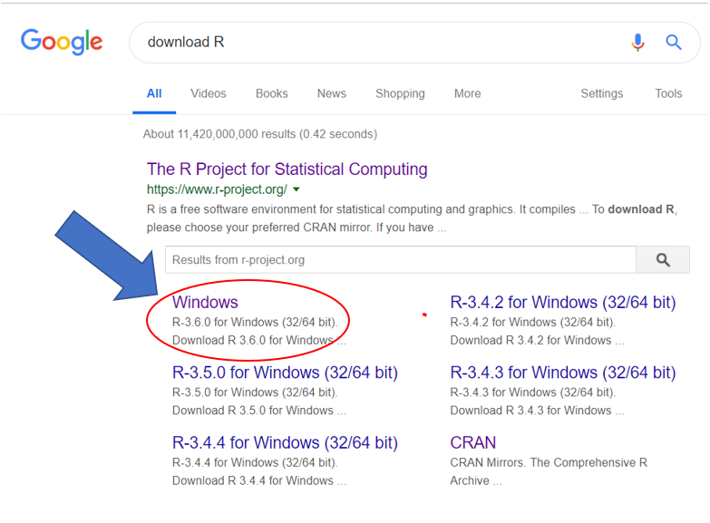
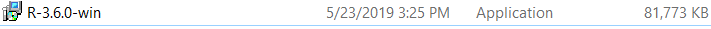

We R Psychologist
What is R?
If you want the official long winded definition of R you can read more from their website. R. However, I will give you the short sweet definition that’ll be easier to digest. R is n open-source free software that any of you can download onto your laptops. For the most part what we are going to use R for is as a statistical software that allows you to load data, clean data, graph data, and run analysess. This is really only a small portion of what R can do. For example, this website was made using R, also R is a calculator, R can be a word docuement, and can create and do many other actions. I wouldn’t say R is the magic bullet to having everything a psychologist would need, but it has alot and will be valuable to you if you learn the basics. The perk of learning R is if you can understand this program you will be able to learn others with lttle effort.
Why use syntax?
How to download R and Rstudio
Okay lets go step by step to download R and R studio. The reason you have to download two programs is R which we can think of the computing program, and then R Studio is an IDE (Intergradted Development Environment). In other words, R studio is a tool that allows R to be more productive while being a user inteface, that is in my opinion, not as intimidating as a square box. The first step to download R is to open your browser and type in download R. It should look something like this. After that if you are a windows user click on the Windows that is circled 40x over. 
After clicking on windows you’ll be brought to this screen. It should like the picture below and if you are downloading from windows click Download R 3.6.0 for Windows. 
You’ll then save a file to your preferred location on your computer. That will be named R-3.6.0-win Click on this to start installing R.  1.It’ll ask you if you want to make changes to your device?: Yes 2.Prefferred Language then click okay 2. License of really long text. READ ALL OF IT(Kidding): Next 4. Choose where you want to install R. 5. Install all the components 6. For customize start up options: No(accept defaults) 7. Then pick if you want a shortcut.You don’t necessarily need one for R.
Okay he we go. Click on R studio. From here you’ll want to click on the Download Free for RStudio Desktop. If you’re a windows person use windows. If you’re an MAC download the MAC one at the very top. Steps: 1.
Understanding Rstudio Interface
Intalling and Loading Packages
There are an abundance in R-package ##Psych Package ##ggplot ##shiny